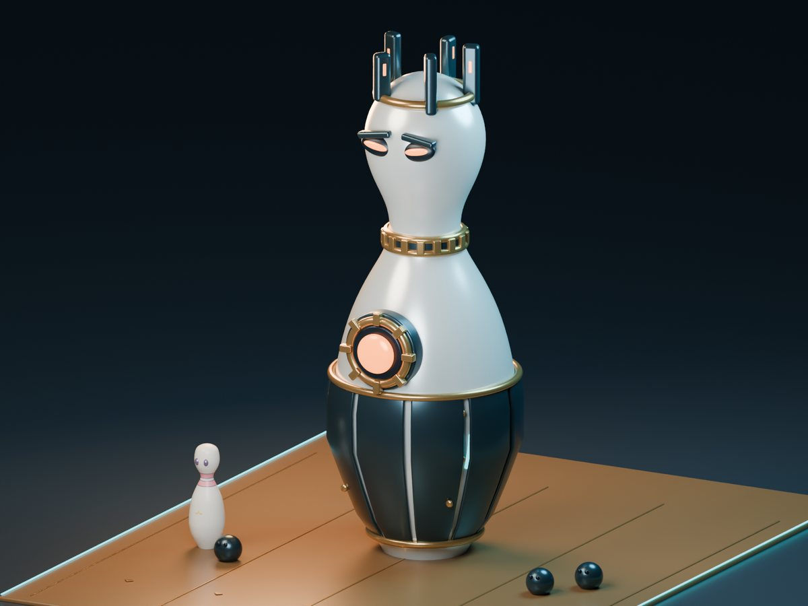

BOSS: KINGPINFLAGSHIPWindowsWeb
Strike-Strike 2
대원은 볼링핀, 총알은 볼링공.
볼링 테마로 다시 만든 5대5 택티컬 슈터예요. 공을 바닥에 굴려 상대 팀을 모두 쓰러뜨리거나 폭탄을 설치하고 해체해서 라운드를 따내요. 벽에 튕기는 공으로 각을 재는 맛이 있어요.
- 라운드제 폭탄 설치·해체, 상점과 이코노미
- 쉬움·보통·어려움 봇과 바로 한 판
- 1~4인 PvE 원정, 6가지 패턴의 보스 킹핀
미니 볼링 — 공을 뒤로 끌었다 놓으세요0 / 10